MorseCQ is a free, account-free Morse code trainer. Structured Koch lessons, receive drills, sending practice and simulated QSOs, all running on your own device with no network required.
Koch method with Farnsworth spacing, 42 lessons, spaced review and a daily plan.
− · − ·
Practise with purpose
Guided first steps, then independent copy and sending with realistic timing and instant feedback.
− − · −
Runs offline
Lessons, drills, recordings and progress stay on your device. No account, no analytics, no ads.
· − − ·
Everywhere
Phone, tablet and desktop, with touch keys, the keyboard or a USB keyer, in ten languages.
02 — what it does
Everything you need, from first dit to confident copy
Learn, drills, simulated QSOs, reference, radio tools and local progress, all in one focused trainer.
Learn
A real course, not a flashcard deck
MorseCQ teaches the way experienced operators recommend: characters at full speed from day one, new ones added only when the evidence says you copy the current set reliably.
A gentle first lesson: hear dit and dah, then K and M, with guided recognition and sending before you copy on your own.
Koch method: 42 lessons that advance through challenges, with per-character evidence.
Farnsworth spacing: fast characters, generous gaps while you learn.
Spaced review and a mistake notebook: characters you miss come back when they are due.
A daily plan and streaks keep a little practice going every day.
Send practice works on an on-screen straight key or iambic paddle, on the keyboard and with USB keyer adapters. A streaming decoder shows what you keyed in real time, and the summary tells you whether your dahs are too short or your gaps too long.
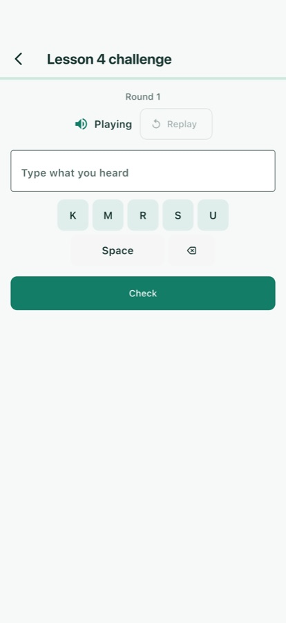
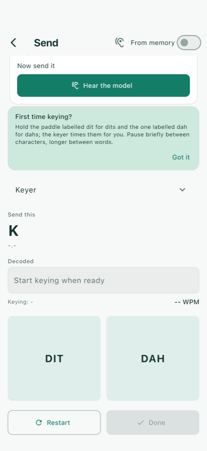
Toward the air
Rehearse your first QSO before you make it
When the alphabet is in your ears, MorseCQ keeps going: goal routes for a first QSO, ragchew conversation or contesting, and a simulator that plays the other station.
Simulated QSOs with readiness hints, corrections and targeted repetition.
Contest and park-to-park POTA exchanges, at the pace of a real pile-up.
Whole-word and sentence comprehension, following CW Academy intermediate directions.
Assisted attempts stay separate from independent mastery, so your stats stay honest.
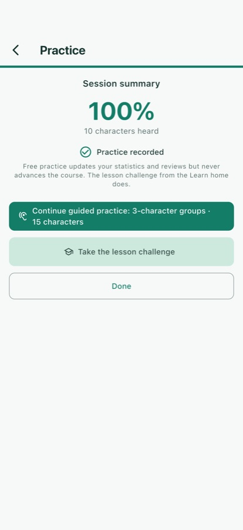
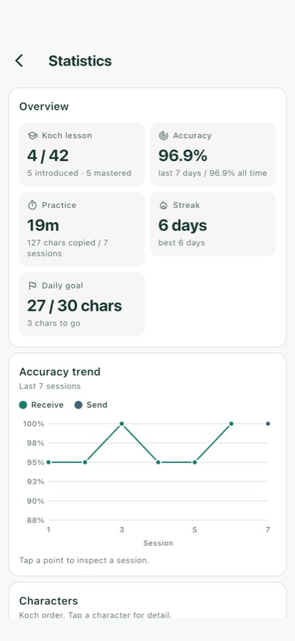
Listen by microphone
Decode Morse from live audio, such as a radio, a practice oscillator or a video, or work through a recording in the audio workbench.
Reference & translator
Alphabet, punctuation, prosigns, Q-codes and CW abbreviations, plus a two-way text ↔ Morse translator with Chinese telegraph codes.
Radio tools
Maidenhead locator with distance and beam heading, IARU band edges with antenna lengths, a CW speed calculator, RST builder and UTC clock.
Statistics
Accuracy trends, a per-character grid, a confusion heat-map of the characters you mix up, and a practice calendar.
Five looks, ten languages
Modern Calm, Classic Brass, Night Radio, Paper Handbook and Fresh Cartoon, each light or dark, in ten interface languages.
Sound, haptics, light
Low-latency sidetone on every platform, haptics on phones and a screen flash everywhere, with your own speed, tone and spacing.
Your progress, your device
Progress, materials and recordings stay on your device. Clear them any time from Me; no personal data is collected.
At home on the desktop
Window size remembered, close to tray, a tray menu and keyboard shortcuts on macOS, Windows and Linux.
a practice round
How a practice round works
1
You key it
Type, tap a straight key, squeeze a paddle or plug in a USB keyer. MorseCQ decodes your keying into text.
2
MorseCQ evaluates it
The trainer checks timing, accuracy and rhythm locally, then records the result in your on-device progress.
3
You hear it
Replay the prompt and your own keying at the speed and tone you choose, then try again.
03 — try it
Hear it right here
Type something and hear it the way MorseCQ plays a prompt.
04 — every screen
Screenshots
Real frames of MorseCQ 1.0.1 captured by the app's own screenshot pipeline, not mock-ups.
First lessonReceive drillSession summaryGuided sending
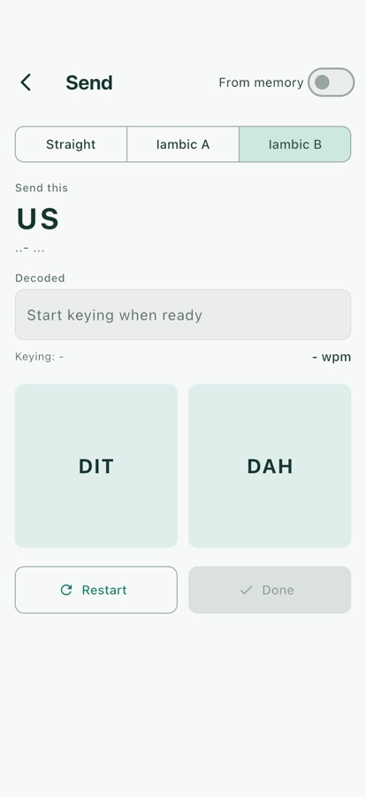
Send practice
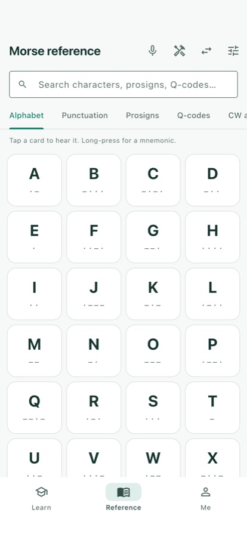
Reference
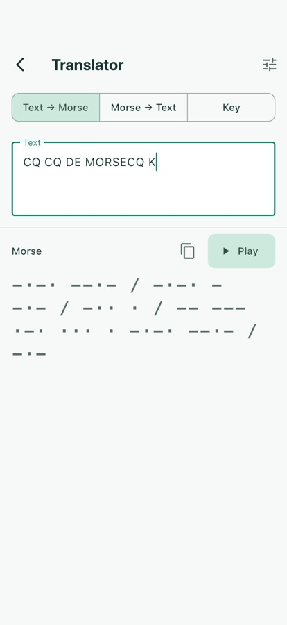
Translator
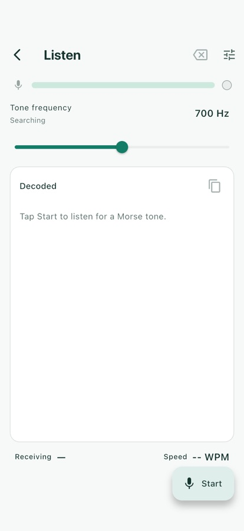
Listen by micStatistics
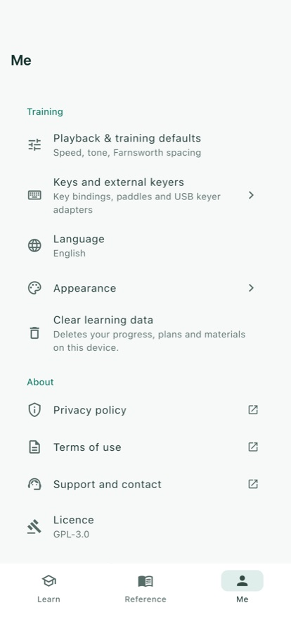
Me & settings
Learn home
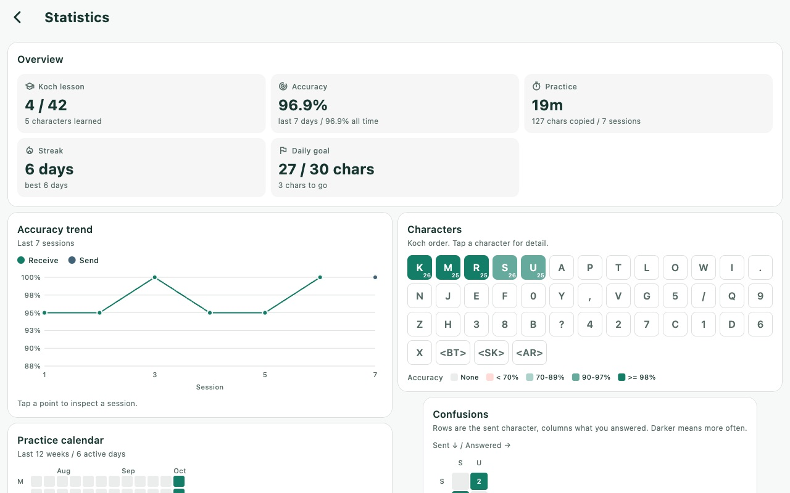
Statistics
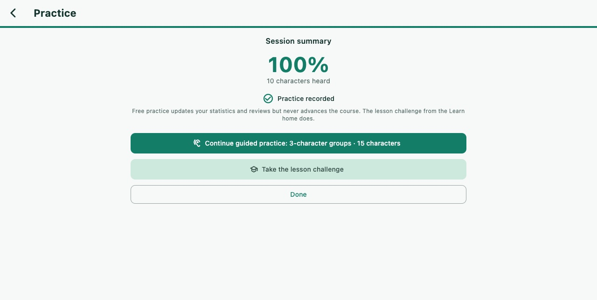
Session summary
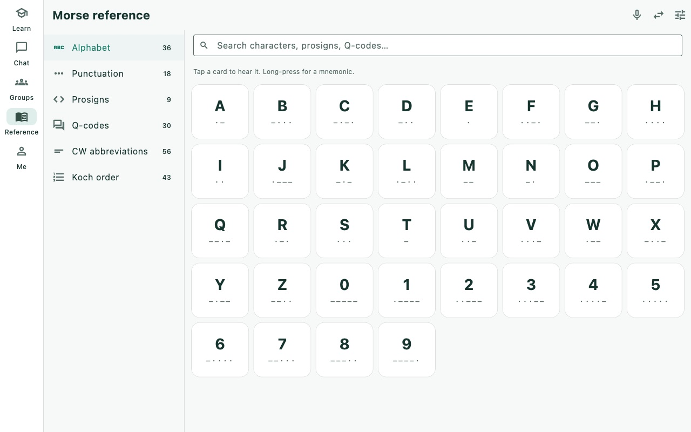
Reference
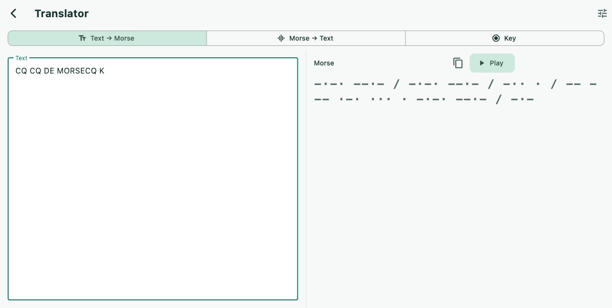
Translator
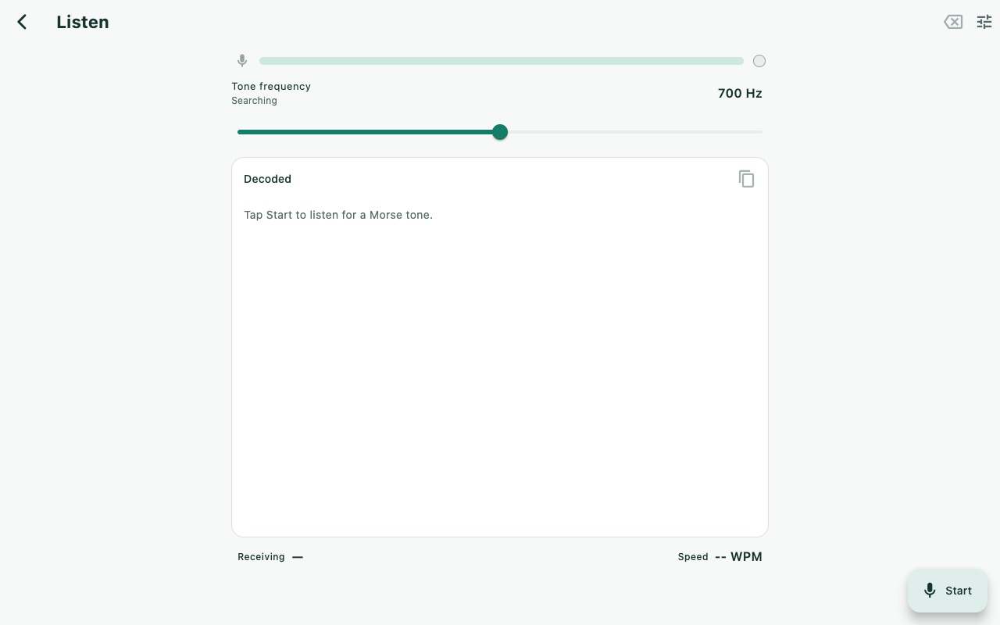
Listen by mic
05 — download
Get MorseCQ for your device
Free, no account needed. Every package is built by CI from the public source and published on GitHub Releases.
Each release ships a SHA256SUMS file. Compare it with the hash of the file you downloaded: shasum -a 256 <file> on macOS, sha256sum <file> on Linux, Get-FileHash <file> in PowerShell.
Download the APK on your phone, or transfer it from your computer.
Open it. If Android asks, allow your browser or file manager to install unknown apps.
The APK is signed with a debug key, so a future store build will not upgrade it in place.
# or sideload with adbadb installmorsecq-1.0.1-android.apk
MorseCQ is not on the App Store yet. Download the unsigned .ipa.
Sign and install it with a sideloading tool such as AltStore or Sideloadly and your Apple ID, or build from source in Xcode.
Requires iOS or iPadOS 14 or later.
Install Flutter 3.41.9 (Dart 3.11) and the host platform's build tools.
Resolve the Pub workspace at the repository root, then run the app:
git clone https://github.com/agentx-icu/morsecq.git
cd morsecq
dart pub get --enforce-lockfile
cd apps/morsecq && flutter run
07 — faq
Questions, answered
Do I need an amateur radio licence?
No. MorseCQ never transmits anything, so anyone can learn. If you are a licensed operator, it is a good way to keep your CW sharp between contacts.
Do I need an account or an internet connection?
Neither. Open the app and start learning. Lessons, drills, materials and progress all run on your device.
Where is Morse chat?
MorseCQ is the offline trainer and has no chat or calls. Morse chat lives in DitMesh, a separate app.
What happens to my data?
It stays on your device. MorseCQ collects no personal data and has no analytics or advertising. Me → Clear learning data removes progress, materials and recordings. See the privacy policy.
Why does my system warn me when I install it?
The 1.0.1 builds are not code-signed or notarized yet. The install guide shows how to confirm on each platform. You can check any download against SHA256SUMS.
Which languages does the app speak?
Ten: English, Simplified and Traditional Chinese, Japanese, Korean, German, French, Spanish, Portuguese and Russian. The translator also handles Chinese telegraph codes.
Is it really free?
Yes. MorseCQ is free software under the GNU General Public License v3.0. Bug reports and contributions are welcome on GitHub.